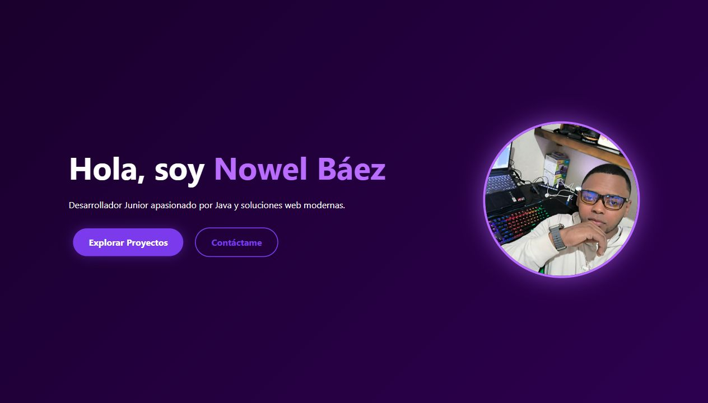
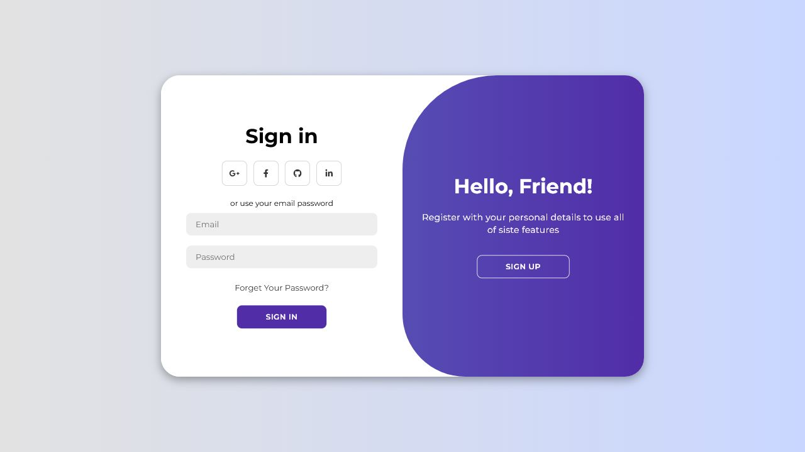
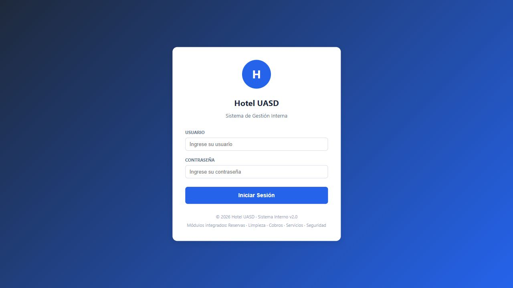
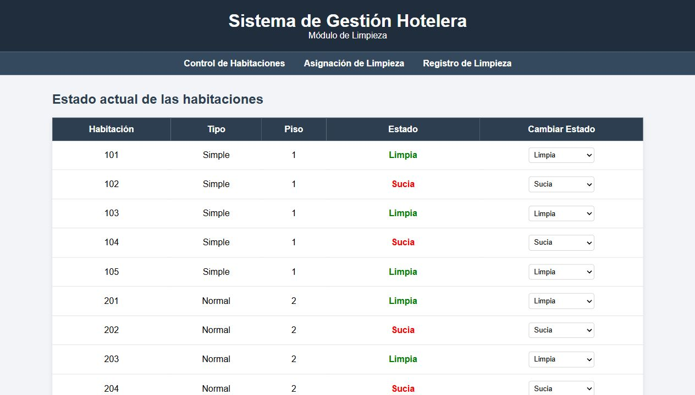
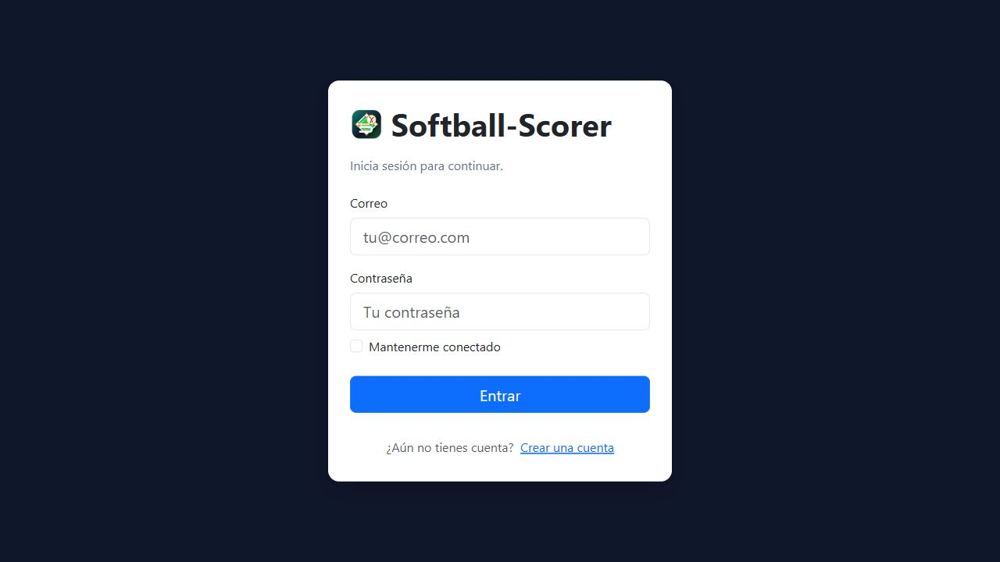

Un ajuste puntual · desde US$25
Corregir un detalle de HTML, CSS o JavaScript en una página existente: por ejemplo, un botón, un enlace o una sección que se desborda en celular. Incluye una ronda de cambios sobre el alcance acordado.
Te ayudo a mejorar tu página web: diseño para celulares, botones, formularios e interacciones con HTML, CSS y JavaScript. Soy desarrollador junior y también construyo proyectos Android y APIs.
Ajustes puntuales desde US$25. Confirmo alcance y plazo después de revisar tu página.
Empecemos con una tarea concreta. Reviso tu página y acordamos qué incluye el trabajo antes de comenzar.
Corregir un detalle de HTML, CSS o JavaScript en una página existente: por ejemplo, un botón, un enlace o una sección que se desborda en celular. Incluye una ronda de cambios sobre el alcance acordado.
Mejorar la lectura, el espaciado y la distribución de una sección para que se use con comodidad en pantallas pequeñas. El precio depende de los cambios necesarios.
Una web sencilla con tus servicios, imágenes y medios de contacto. Revisamos el contenido, las secciones y el presupuesto; dominio, hosting y mantenimiento se acuerdan por separado.
Envíame el enlace y una captura del problema. Te confirmo si puedo resolverlo, qué entregaré y el precio. Puedes consultar pago por PayPal o transferencia.
Cuéntame qué necesita tu webProyectos personales y académicos que muestran cómo trabajo con interfaces, aplicaciones y datos. Las colaboraciones están identificadas en cada proyecto.
Agenda personal para organizar rutinas con recordatorios de voz, música local y sesiones de Enfoque. El panel de Windows permite vincular el teléfono por QR y gestionar tareas en la misma red.
Ver código en GitHub
Lo hice para mostrar quién soy, qué estoy aprendiendo y tener un espacio donde reunir mis proyectos mientras sigo creciendo como desarrollador.
Ver proyecto
Interfaz moderna de inicio de sesión y registro con animación lateral, formularios separados e iconos sociales.
Ver demo Ver código
Proyecto final desarrollado con la participación del curso completo, organizado en grupos de tres personas. Cada grupo trabajó un módulo específico y luego se integraron las partes para construir un sistema hotelero funcional.
Ver proyecto
Este módulo de limpieza permite gestionar las habitaciones del hotel, asignar tareas al personal y actualizar el estado de cada habitación para llevar un mejor control dentro del sistema.
Ver proyecto
Proyecto desarrollado en colaboración con Wilfredi para optimizar el registro de anotaciones en partidos de softball, reemplazando el uso de hojas físicas por una solución digital más práctica.
Ver proyectoSoy estudiante de la Licenciatura en Informática en la UASD, con proyectos en Android, Java, Python y tecnologías web, y aspiro a desarrollarme como ingeniero en sistemas. Me gusta construir proyectos funcionales, aprender resolviendo problemas reales y trabajar en equipo para convertir ideas en soluciones útiles. Actualmente sigo fortaleciendo mis habilidades en programación, bases de datos y desarrollo web.
Tecnologías que uso para crear interfaces, manejar datos y desarrollar lógica de aplicaciones.
Aprendo desarrollando proyectos reales, cuidando estructura, claridad visual y funcionamiento.
Me interesa conectar interfaces con procesos, archivos, bases de datos y reglas de negocio.
He colaborado en proyectos académicos dividiendo módulos, integrando avances y documentando resultados.
Estoy enfocado en fortalecer mis bases de programación, crear soluciones web funcionales y participar en equipos donde pueda aprender buenas prácticas, aportar disciplina y mejorar cada entrega.
Formación técnica y complementaria que fortalece mi base profesional.
Formación impartida en Grupo Ramos SA, enfocada en atención, trato profesional y servicio al cliente.
Certificación del Politécnico México que valida mi formación técnico-profesional en el área de Mecatrónica.
Diploma de formación técnica donde fortalecí bases prácticas de tecnología, mantenimiento y resolución de problemas.
Envíame la URL de tu web, una captura y el cambio que buscas. Te respondo con un alcance y presupuesto antes de empezar.